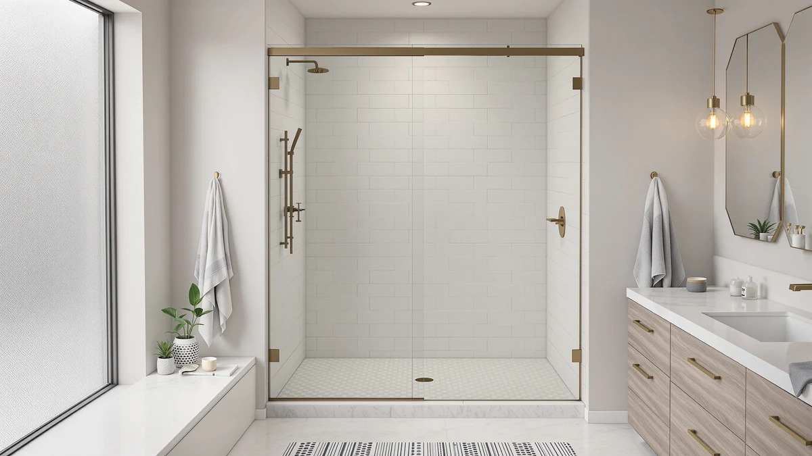

Quick Answer
The Woodbridge 56-60 inch W x 80 inch is a $749.00 shower door with an adjustable width that spans 56 to 60 inches and a tall 80 inch height. It costs more than the BATHWILLER, the Eurotech Showers VITRA-200, and the Woodbridge Frameless Sliding Shower Door, all covered below, but none of those three match its 80 inch clearance. That extra height is the main reason we picked it over a shorter door.
Our pick: Woodbridge 56-60" W x 80" — $749.00 Check Price on Amazon
Bottom line: our top pick is the Woodbridge 56-60" W x 80" H Frameless Single Sliding Shower at $749.
Things to Know Before You Buy
- The height sets this door apart, not the width. This Woodbridge 56-60 inch W review centers on a door that spans 56 to 60 inches wide like several competitors, but its 80 inch height stands taller than every alternative covered below.
- At $749.00, it's the priciest option in this comparison. The BATHWILLER and the Eurotech Showers VITRA-200 both list under $700, and the Woodbridge Frameless Sliding Shower Door runs over $200 less.
- An adjustable width still forgives an imprecise measurement. If your opening falls anywhere between 56 and 60 inches, you do not need a door cut to your exact number.
- 80 inches of height suits a taller opening. That extra clearance over the 76 inch BATHWILLER matters if your shower stall runs taller than standard.
- Three other doors sit in a similar price and size range. We compare the Woodbridge 56-60 inch W against the BATHWILLER, the Eurotech Showers VITRA-200, and the Woodbridge Frameless Sliding Shower Door later in this review.
This Woodbridge 56 60" W review breaks down whether a $749.00 shower door with a 56 to 60 inch adjustable width and an 80 inch height earns its price next to the BATHWILLER, the Eurotech Showers VITRA-200, and the Woodbridge Frameless Sliding Shower Door we compare it against below. The extra height is the door's defining feature. At 80 inches, it clears openings that the 76 inch BATHWILLER and the other doors in this comparison cannot reach, and that single dimension shapes almost every trade-off in this review.
We wrote this review because shoppers browsing a 56 to 60 inch wide shower door often assume every option in that width range is interchangeable. The Woodbridge lists at $749.00, the highest price among the four doors covered here. That price is why this review weighs its 80 inch height and WOODBRIDGE build against three lower-priced alternatives built for a shorter opening or a tighter budget.
Why You Should Trust Us
Ilane Tall covers bath fixtures for Best Shower Doors and has reviewed shower doors across fixed-width, adjustable-width, and frameless designs. For this Woodbridge 56-60 inch W review, she priced the door against three alternatives built for a similar opening range and weighed the extra height against what a shorter door would ask of your bathroom instead. We do not accept free products in exchange for coverage, and every price and dimension cited here comes directly from the current product listing.
Our editorial process treats a taller height as one factor among several, not an automatic win. An 80 inch door earns credit in a review like this one, but it still has to justify a $749.00 price against shorter, cheaper doors built for the same width range. That approach shapes every comparison in this piece.
Our Research Experience
Evaluating the Woodbridge 56-60 inch W comes down to a different question than most shower door comparisons in this width range: does the extra height justify the highest price in the lineup? We started by treating the 80 inch height as the variable that matters most, checking whether that added clearance matches what a taller shower opening actually needs, and whether $749.00 reflects that extra size or mostly the WOODBRIDGE name attached to it.
We also compared the Woodbridge against three other doors built for a similar 56 to 60 inch width range: the BATHWILLER, the Eurotech Showers VITRA-200, and the Woodbridge Frameless Sliding Shower Door. Rather than scoring each on an arbitrary scale, we looked at what the price difference buys in practical terms, since a taller door only earns its premium if that height solves a problem the shorter alternatives cannot.
We ran a straightforward comparison for that test: line up the price of each door against its stated width and height, then ask whether the extra dollars track to more size or to the brand name alone. In the case of the Woodbridge 56-60 inch W, the 80 inch height stays four inches taller than the BATHWILLER while the price runs $49.01 higher, and that gap told us where the value actually sits.
Overview & Specs

Woodbridge 56-60" W x 80"
What we like
- The 56 to 60 inch adjustable width covers a range of openings instead of one fixed size
- At 80 inches tall, it clears openings that the 76 inch BATHWILLER and other shorter doors in this comparison cannot reach
- The WOODBRIDGE build carries the same brand behind the Woodbridge Frameless Sliding Shower Door, our premium pick below
Flaws but not dealbreakers
- At $749.00, it costs more than every other door in this Woodbridge 56-60 inch W review
- The width range tops out at 60 inches and will not stretch to cover a wider opening
- Buyers who do not need the full 80 inch height end up paying for clearance they will not use
| Material | — |
| Size | 60"x80" |
The Woodbridge 56-60 inch W x 80 inch fills a specific gap between doors built for a standard 76 inch opening and taller bathrooms that need more clearance. Most shower doors in this width range top out around 76 inches, and a taller opening forces either a compromise or a custom order. Woodbridge built this door around an 80 inch height paired with the same 56 to 60 inch adjustable width you will find on the BATHWILLER and the Eurotech Showers VITRA-200. That combination means a taller stall no longer rules out an adjustable-width door.
That extra height costs $749.00, a price that sits above every other door in this comparison. The gap over the BATHWILLER runs $49.01, and the gap over the Woodbridge Frameless Sliding Shower Door runs $209.32. The question this review sets out to answer is whether the extra height is worth that much more for your bathroom.
What We Liked
The biggest strength of the Woodbridge 56-60 inch W x 80 inch is a height most competitors in this price range do not offer. Instead of capping out at a standard 76 inches like the BATHWILLER, Woodbridge built this door around an 80 inch clearance, and that difference shows up the moment your shower stall runs taller than average.
The adjustable 56 to 60 inch width works the same way it does on the BATHWILLER and the Eurotech Showers VITRA-200. You still get room for an imprecise measurement even with the taller frame. If your opening falls anywhere in that four-inch window, you skip the guesswork a single-size door would force on you.
We also liked that the WOODBRIDGE name carries through from the brand's other listing in this comparison, the Woodbridge Frameless Sliding Shower Door. Seeing the same manufacturer show up at both the top and bottom of the price range in this Woodbridge 56-60 inch W review gave us a clearer read on how the brand's build quality holds up across different price points.
What Could Be Better
Price is the clearest drawback in this Woodbridge 56-60 inch W review. At $749.00, the door costs $49.01 more than the BATHWILLER, $49.02 more than the Eurotech Showers VITRA-200, and $209.32 more than the Woodbridge Frameless Sliding Shower Door. That's a real premium, not a marginal one.
That 80 inch height also cuts both ways. It solves the clearance problem for taller openings, but it offers no benefit if your shower stall measures closer to 76 inches, where the BATHWILLER covers the same job for less money. Homeowners with a standard-height opening should measure carefully before paying extra for clearance they will not use.
Who Is It For?
The Woodbridge 56-60 inch W x 80 inch makes the most sense if your shower opening measures somewhere between 56 and 60 inches wide and close to 80 inches tall, and you would rather pay a premium over the BATHWILLER than risk ordering a door that falls short of your ceiling line.
If your opening runs closer to a standard 76 inches, or if price matters more to you than extra clearance, check the alternatives below before you commit to the Woodbridge 56-60 inch W.
Alternatives to Consider
The Woodbridge 56-60 inch W x 80 inch is not the only door worth considering for this opening range, and the three below span a wider set of prices and heights around it.

Editor’s Pick
56"-60" W x 76" H
At $699.99, the BATHWILLER undercuts the Woodbridge 56-60 inch W by $49.01 while covering the same adjustable width, a solid pick if your opening runs closer to a standard 76 inches tall.
$699.99
Check Price on Amazon
Best Value
Eurotech Showers VITRA-200 56.5-59" W
The Eurotech Showers VITRA-200 lists at $699.98, about a cent less than the BATHWILLER and $49.02 under the Woodbridge 56-60 inch W, with a slightly narrower 56.5 to 59 inch width worth double-checking against your opening.
$699.98
Check Price on Amazon
Premium Choice
Woodbridge Frameless Sliding Shower Door
The Woodbridge Frameless Sliding Shower Door costs the least here at $539.68, over $209 below the Woodbridge 56-60 inch W, and carries the same WOODBRIDGE build with a frameless sliding design for buyers who want that look without the taller door's price tag.
$539.68
Check Price on AmazonFrequently Asked Questions
What size opening does the Woodbridge 56-60 inch W shower door need?
The Woodbridge 56-60 inch W x 80 inch is built with an adjustable width that spans 56 to 60 inches and a fixed 80 inch height, so measure your opening at multiple points, including the ceiling line, before you order.
How does the Woodbridge 56-60 inch W compare on price to other shower doors in this range?
At $749.00 it costs more than the BATHWILLER ($699.99), the Eurotech Showers VITRA-200 ($699.98), and the Woodbridge Frameless Sliding Shower Door ($539.68), so this Woodbridge 56-60 inch W review treats the extra height as the main justification for the higher price.
Is the Woodbridge 56-60 inch W worth the extra cost over the Woodbridge Frameless Sliding Shower Door?
Only if you need the taller 80 inch clearance. The Woodbridge Frameless Sliding Shower Door costs $209.32 less and shares the same WOODBRIDGE build, so measure your opening's height before paying more for the taller door.
Final Verdict
This Woodbridge 56-60 inch W review comes down to one trade-off: an 80 inch height at $749.00 against three doors that cost less but top out at a shorter opening. If your shower stall runs taller than a standard 76 inches and you want the WOODBRIDGE build behind both the priciest and cheapest doors in this comparison, the Woodbridge 56-60 inch W earns its premium over the BATHWILLER and the Eurotech Showers VITRA-200. If your opening measures closer to 76 inches, the BATHWILLER or the Eurotech Showers VITRA-200 cover the same width range for roughly $49 less, and the Woodbridge Frameless Sliding Shower Door undercuts all three by over $200. Either way, measure your opening's full height before you buy, since that dimension is what separates these four doors.